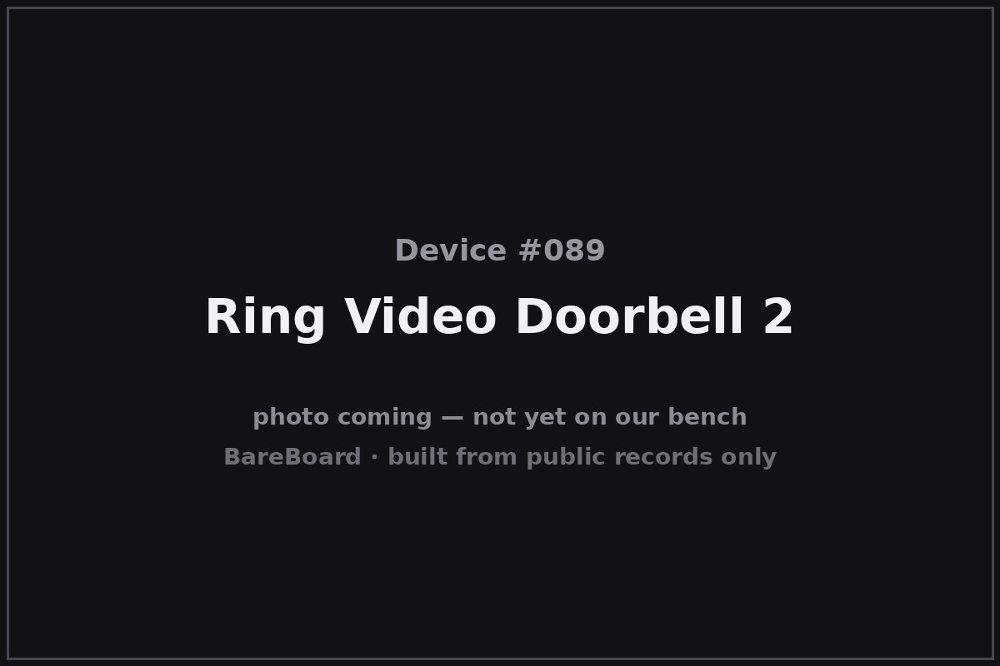

The Autopsy Report · Device #089
Ring Video Doorbell 2
The Video Doorbell 2 is the Ring that went mainstream: launched in June 2017, it doubled the original's resolution to 1080p and added a removable, rechargeable battery pack — the feature that let anyone with a doorframe, but no doorbell wiring, join the video-doorbell era. This report covers hardware revision 041, the launch hardware — not the later 042 or 043 revisions.
What is this thing?
The Ring Video Doorbell 2 is a smart video doorbell: 1080p HD video (up from 720p on the original), a 160° field of view, two-way audio, and motion detection — powered either by existing doorbell wiring (8–24 VAC) or by its removable rechargeable battery pack. TechCrunch
It launched at $199 and talked to home Wi-Fi on 2.4 GHz 802.11 b/g/n. MacRumors
Whose box is this?
This one isn't on our bench — yet. Nothing here comes from a BareBoard teardown: no disassembly, no boot logs, no bench measurements, no firmware in our hands. Everything below is built from public records — the government's FCC filing, the manufacturer's own documents, and contemporary press — read carefully and cited line by line. That's the deal with these reports: when a fact can't be verified from a public record, we say so, out loud.
The moment this hardware crosses our bench, this report gets a second act: our own photos, our own measurements, and anything the public record got wrong gets corrected.
A short history
Ring announced the Video Doorbell 2 on June 19, 2017. TechCrunch The pitch was simple: everything the original did, sharper, plus the swappable battery that freed it from doorbell wiring entirely. 9to5Toys It became Ring's volume seller and the template for the doorbell wars that followed.
Revision discipline matters here: this report is about hardware revision 041 — the launch hardware. Later revisions BHARG042 and BHARG043 have their own filings and, in the 043's case, their own public internal photos. FCC internal photos — BHARG043 (later revision, NOT this device) Those belong to different reports; they don't get mixed into this one.
The outside

The Doorbell 2 is a slim rectangular unit with the camera lens and PIR motion sensor up top, the backlit doorbell button below, and the battery pack sliding out from the bottom. Contemporary coverage notes the swappable battery as the headline physical feature — charge one pack while the other runs the door. TechCrunch
Reading the plastic
Mold marks, date wheels, material codes — the shell's birth certificate. This is bench-only evidence: without the physical unit in our hands, there's nothing honest to read here. What the enclosure looks like is described above from public photos; what's molded into it awaits the bench.
The board
No internal-photograph exhibit for revision 041 has been verified in open research — the public internal photos that exist belong to the later 043 revision and are explicitly excluded from this report. FCC exhibit — BHARG043 only So the 041 board layout is unknown: the public record supports the functional blocks (1080p imaging, 2.4 GHz Wi-Fi, PIR motion sensing, battery power management) and nothing finer.
Under the microscope: the chips
Unknown. Without a verified board photograph or bill of materials for revision 041, naming chips would be fabrication — and borrowing the 043's component list would be worse than guessing, because it would look like evidence. This section waits for a donor unit of the actual 041 hardware.
The government's file on this box
The FCC equipment authorization is FCC ID 2AEUPBHARG041, grantee Ring LLC. fccid.io filing The filing's grant is recorded as April 26, 2017. This is revision 041 — the BHARG042 and BHARG043 filings are separate authorizations for separate hardware.
Listening in
We have no boot log for this device — no unit on the bench means nothing to listen to. But the posture is worth stating up front, because it governs everything BareBoard ever does with a live device.
We listen, we don't knock. A serial console is a place to watch a device narrate its own startup, not a place to log in, change things, or break past anything the manufacturer locked. On our bench we attach read-only: power and ground, one receive wire, and silence on the transmit line. We never use JTAG or SWD debug headers to take control, never extract or modify firmware, never hunt for credentials, and never publish anything that would let someone else bypass a lock or defeat authentication.
When this device arrives, the first question will be: where does it talk, and does it talk to us unprompted? Until then, that question stays open.
What we found
- The Video Doorbell 2 (revision 041) launched June 19, 2017 at $199: 1080p, 160° view, swappable battery.
- Public internal photos exist only for the later 043 revision — they're excluded here on purpose.
- The 041 board and chip list are undocumented in public records and await the bench.
What we didn't do
- We never opened a unit, attached to a debug port, or powered one up for this report.
- We never extracted, modified, or shared any firmware or software.
- We never published or used any credentials, keys, or bypass techniques.
- No boot logs, no bench measurements, and no photos of our own — because there is no unit of ours to photograph. The device photo above is credited in its caption.
By the numbers
- Launch: June 19, 2017
- Revision: 041 (launch hardware)
- Video: 1080p HD, 160° field of view
- Power: Removable rechargeable battery or 8–24 VAC wiring
- Wi-Fi: 802.11 b/g/n, 2.4 GHz
- Price at launch: $199
- FCC ID: 2AEUPBHARG041
- Bench status: Not yet on our bench
Words to know
- PIR sensor
- Passive infrared motion sensor — detects body heat moving across its field of view; what wakes the doorbell up.
- Hardware revision
- A version of the physical product; later revisions can change chips and layout while keeping the same name.
- FCC ID
- The identifier the U.S. Federal Communications Commission assigns to authorized radio equipment; the filing is public.
Sources & confidence
- Ring's new video doorbell gets 1080p video and a swappable battery pack — TechCrunch, Jun 2017 link — Confirmed
- Ring Video Doorbell 2 announcement — 9to5Toys, Jun 2017 link — Confirmed
- Ring announces Video Doorbell 2 — MacRumors, Jun 2017 link — Confirmed
- FCC filing 2AEUPBHARG041 (grantee: Ring LLC; grant recorded 2017-04-26) — fccid.io link — Likely
- FCC internal photos for BHARG043 (later revision — excluded from this report) link — Confirmed
- Internal hardware of revision 041 (board layout, chip list) — no verified public exhibit found — Unknown
Legal note. BareBoard is an educational project. Everything on this page is derived from public records — our own bench work begins only when hardware arrives. We don't publish, host, or distribute firmware, keys, passwords, or credentials, and nothing here bypasses a lock, defeats authentication, or extracts software from a device. Product names and trademarks belong to their respective owners and appear here only to identify the hardware. If you believe anything here infringes your rights, contact us and we'll address it promptly.